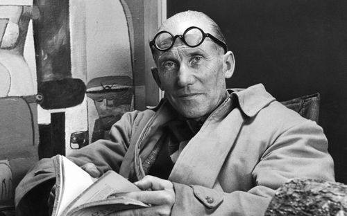

르 코르뷔지에
스위스 태생의 프랑스에서 활동한 건축가 입니다.
모더니즘 건축의 아버지라 불리우는 인물로, 현대 건축의 기초를 다졌다고 평가되며
프랭크 로이드 라이트 등과 함께 20세기 가장 영향력 있는 건축가 중 한명으로 꼽힙니다.
또한 현대적인 아파트 단지의 방식을 확립한 사람으로도 유명하다.

르 코르뷔지에의 일생
- 1.1887년 10월 6일 스위스 뇌샤텔 주 라쇼드퐁에서 태어났다.
- 2.미술학교에서 그의 스승은 화가가 되려는 그에게 건축을 하라고 권했다.
- 3.이후 19세까지 총 7개 정도의 설계를 했지만, 전부 고전 방식이었으며, 그다지 눈에 띄는 작품들은 없었다.
- 4.베를린에서 출발해 프라하, 빈, 부다페스트, 이스탄불, 아테네, 폼페이 등을 방문하는 이 여행길에서 그는 위대한
고(古) 건축들을 관찰하며 많은 것을 배운다